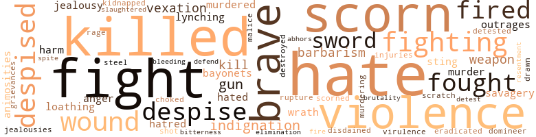
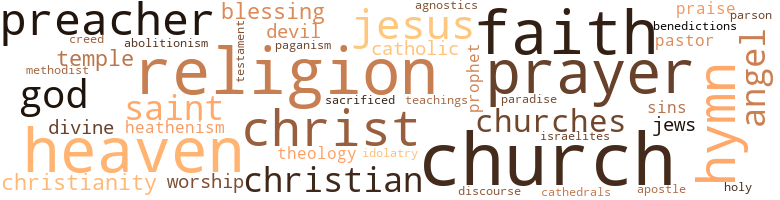

Iola Leroy; Or, Shadows Up- Lifted, by Harper, Francis Ellen Watkins (1892)
77 music-related terms matched in this text.
Most frequent terms in this topic: sing (12); hymn (9); sang (8); singing (5); songs (5)
chapter.n.01
Definition: a subdivision of a written work; usually numbered and titled
| word | sentence |
|---|---|
| chapter | Her favorite chapter began with , ' Let not your heart be troubled , ye believe in God , believe also in Me . |
chorus.n.01
Definition: any utterance produced simultaneously by a group
| word | sentence |
|---|---|
| chorus | " Dat ' sso ! " exclaimed a chorus of voices . |
| chorus | Again there was a chorus of moans . |
| chorus | " No , no , " exclaimed a chorus of voices , " but many 's de time you 've held off de blows wen de oberseer got too mean , an ' cruelized us too much , wen Marse Robert war away . |
clarion.n.01
Definition: a medieval brass instrument with a clear shrill tone
| word | sentence |
|---|---|
| clarion | His words were more than a tender strain wooing her to love and happiness , they were a clarion call to a life of high and holy worth , a call which found a response in her heart . |
dance.n.01
Definition: an artistic form of nonverbal communication
| word | sentence |
|---|---|
| dance | Oh , children of the tropics , Amid our pain and wrong Have you no other mission Than music , dance , and song ? |
dance.v.03
Definition: skip, leap, or move up and down or sideways
| word | sentence |
|---|---|
| danced | As to Jinny , she jis ' capered and danced all ober de flore . |
epistle.n.02
Definition: a book of the New Testament written in the form of a letter from an Apostle
| word | sentence |
|---|---|
| epistle | She had seen hard times , but was what I call a living epistle . |
hymn.n.01
Definition: a song of praise (to God or to a saint or to a nation)
| word | sentence |
|---|---|
| hymns | Iola , tender and compassionate , humored his fancies , and would sing to him in low , sweet tones some of the hymns she had learned in her old home in Mississippi . |
| hymn | One day she sang a few verses of the hymn beginning with the words - " Drooping souls no longer grieve , Heaven is propitious ; If on Christ you do believe , You will find Him precious . " |
| hymn | " That , " said he , looking earnestly into Iola 's face , " was my mother 's hymn . |
| hymn | Years after , a Methodist preacher came to our house , sang this hymn , and left the book behind him . |
| hymn | But that hymn which you were singing reminded me so much of my mother ! |
| hymns | But she might as well a sung hymns to a dead horse . |
| hymn | After the bread had been distributed and the handshaking was nearly over , Robert raised the hymn which Iola had sung for him when he was recovering from his wounds , and Iola , with her clear , sweet tones , caught up the words and joined him in the strain . |
| hymn | When the hymn was finished a dear old mother rose from her seat . |
| hymn | One day I sang to him that old hymn we used to sing on the plantation : - " Drooping souls no longer grieve , Heaven is propitious ; If on Christ you do believe , You will find Him precious . " |
| hymn | " After I had finished the hymn , " continued Iola , " he looked earnestly and inquiringly into my face , and asked , ' Where did you learn that hymn ? |
| hymn | " After I had finished the hymn , " continued Iola , " he looked earnestly and inquiringly into my face , and asked , ' Where did you learn that hymn ? |
| hymns | Iola laid her hand gently in the rough palm of the dying man , and , with a tremulous voice , sang the parting hymns . |
music.n.01
Definition: an artistic form of auditory communication incorporating instrumental or vocal tones in a structured and continuous manner
| word | sentence |
|---|---|
| music | The love and devotion of her husband brightened every avenue of her life , while her children filled her home with music , mirth , and sunshine . |
| music | With his coming a shadow fell upon her home , hushing its music and darkening its sunshine . |
| music | Oh , children of the tropics , Amid our pain and wrong Have you no other mission Than music , dance , and song ? |
| music | They are passionately fond of music , and find facilities here that they do not have in the South . |
musical_instrument.n.01
Definition: any of various devices or contrivances that can be used to produce musical tones or sounds
| word | sentence |
|---|---|
| instrument | " Poor woman I " exclaimed Captain Sybil , sympathetically ; " I suppose it seemed as if the wail of her daughter was blending with the tones of the instrument . |
phrase.n.02
Definition: a short musical passage
| word | sentence |
|---|---|
| phrases | I think the term ' bloody shirt ' is one of the most heartless phrases ever invented to divert attention from cruel wrongs and dreadful outrages . " |
| phrases | " Iola , " he said , " I am not an adept in courtly phrases . |
piano.n.01
Definition: a keyboard instrument that is played by depressing keys that cause hammers to strike tuned strings and produce sounds
| word | sentence |
|---|---|
| piano | Now , Marie , seat yourself at the piano and sing : - ' Sing me the songs that to me were so dear , Long , long ago . |
| piano | Captain , I used to know a poor old woman who could n't bear to hear any one play on the piano . " |
| piano | " So we are ; but that poor woman 's daughter was sold , and her mistress took the money to buy a piano . |
place.v.16
Definition: sing a note with the correct pitch
| word | sentence |
|---|---|
| place | Riches take wings to themselves and fly away , but a good education is an investment on which the law can place no attachment . |
section.n.01
Definition: a self-contained part of a larger composition (written or musical)
| word | sentence |
|---|---|
| section | There are a number of slaves in this section who are servants to their own brothers and sisters ; whose fathers have robbed them not simply of liberty but of the right of being well born . |
| section | " I am always glad , " said Mr. Forest , a tall , distinguished-looking gentleman from New York , " when I hear of people who are ill treated in one section of the country emigrating to another . |
| section | " From the unfortunate conditions which slavery has entailed upon that section of our country . |
sing.v.02
Definition: produce tones with the voice
| word | sentence |
|---|---|
| sing | " Well , you had better look out , and not shout too much , and pray and sing too loud , because , ' fore you know , the patrollers will be on your track and break up your meetin ' in a mighty big hurry , before you can say ' Jack Robinson . |
| sing | Often when I was nervous and restless I would have her sing some of those weird and plaintive melodies which she had learned from the plantation negroes . |
| sing | Now , Marie , seat yourself at the piano and sing : - ' Sing me the songs that to me were so dear , Long , long ago . |
| Sing | Now , Marie , seat yourself at the piano and sing : - ' Sing me the songs that to me were so dear , Long , long ago . |
| Sing | Sing me the songs I delighted to hear , Long , long ago . " |
| sang | As Marie sang the anxiety faded from her face , a sense of security stole over her , and she sat among her loved ones a happy wife and mother . |
| singing | It was a lovely day in June , birds were singing their sweetest songs , flowers were breathing their fragrance on the air , when Mam Liza , sitting at her cabin-door , talking with some of the house servants , saw a carriage approaching , and wondered who was coming . |
| sing | Iola , tender and compassionate , humored his fancies , and would sing to him in low , sweet tones some of the hymns she had learned in her old home in Mississippi . |
| sang | One day she sang a few verses of the hymn beginning with the words - " Drooping souls no longer grieve , Heaven is propitious ; If on Christ you do believe , You will find Him precious . " |
| sing | " When she was a little girl she heard her mother sing it . |
| sang | Years after , a Methodist preacher came to our house , sang this hymn , and left the book behind him . |
| sing | We used to sing together , and read the Bible when we were alone . " |
| singing | But that hymn which you were singing reminded me so much of my mother ! |
| sing | She used to sing it when I was a child . |
| sing | Please sing it again . " |
| sung | But she might as well a sung hymns to a dead horse . |
| sang | While she sat , mournfully contemplating the work of destruction , her children formed a procession , and , passing by the wreck of their school , sang : - " Oh , do not be discouraged , For Jesus is your friend . " |
| sang | As they sang , the tears sprang to Iola 's eyes , and she said to herself , " I am not despondent of the future of my people ; there is too much elasticity in their spirits , too much hope in their hearts , to be crushed out by unreasoning malice . " |
| sung | After the bread had been distributed and the handshaking was nearly over , Robert raised the hymn which Iola had sung for him when he was recovering from his wounds , and Iola , with her clear , sweet tones , caught up the words and joined him in the strain . |
| sing | I humored his fancies , would often sing to him when he was restless , and my voice almost invariably soothed him to sleep . |
| sang | One day I sang to him that old hymn we used to sing on the plantation : - " Drooping souls no longer grieve , Heaven is propitious ; If on Christ you do believe , You will find Him precious . " |
| sing | One day I sang to him that old hymn we used to sing on the plantation : - " Drooping souls no longer grieve , Heaven is propitious ; If on Christ you do believe , You will find Him precious . " |
| sing | I have heard my mother sing it when I was a boy , but I have never heard it since . ' |
| sing | He asked me to sing it again , which I did , until he fell asleep . |
| sang | The day was so lovely , the air delicious , the birds sang so sweetly , and the sunset was so magnificent . " |
| sang | Iola laid her hand gently in the rough palm of the dying man , and , with a tremulous voice , sang the parting hymns . |
singing.n.01
Definition: the act of singing vocal music
| word | sentence |
|---|---|
| singing | It could not have been a dream , for when I fell asleep the grass was green and the birds were singing , but now the winds are howling and the frost is on the ground . |
| singing | " Why , Iola , " said Harry , " you used to be the most harum-scarum girl I ever knew - laughing , dancing , and singing from morning until night . " |
| singing | " Yes , went all right , singing and rejoicing until the the last , ' Troubles over , troubles over , and den my troubles will be over . |
song.n.01
Definition: a short musical composition with words
| word | sentence |
|---|---|
| songs | Now , Marie , seat yourself at the piano and sing : - ' Sing me the songs that to me were so dear , Long , long ago . |
| songs | Sing me the songs I delighted to hear , Long , long ago . " |
| songs | It was a lovely day in June , birds were singing their sweetest songs , flowers were breathing their fragrance on the air , when Mam Liza , sitting at her cabin-door , talking with some of the house servants , saw a carriage approaching , and wondered who was coming . |
| songs | There were songs of rejoicing and shouts of praise . |
| songs | The undertone of sadness which had so often mingled with their songs gave place to strains of exultation ; and tears of tender sympathy flowed from eyes which had often been blurred by anguish . |
| song | What matters it if they do forget the singer , so they do n't forget the song ? |
| song | It seems as if all creation travels to respond to the song of the Herald angels , ' Peace on earth , good-will toward men . |
| song | Oh , children of the tropics , Amid our pain and wrong Have you no other mission Than music , dance , and song ? |
theme.n.03
Definition: (music) melodic subject of a musical composition
| word | sentence |
|---|---|
| theme | Her theme was " American Civilization , its Lights and Shadows . " |
| themes | Dr. Gresham was glad to have some reading matter which might divert her mind from the memories of her mournful past , and also furnish them both with interesting themes of conversation in their moments of relaxation from the harrowing scenes through which they were constantly passing . |
tune.n.01
Definition: a succession of notes forming a distinctive sequence
| word | sentence |
|---|---|
| melodies | Often when I was nervous and restless I would have her sing some of those weird and plaintive melodies which she had learned from the plantation negroes . |
| line | Slavery drew a line of cleavage in this country . |
| melody | Her lightest words were an entrancing melody to his ear . |
viol.n.01
Definition: any of a family of bowed stringed instruments that preceded the violin family
| word | sentence |
|---|---|
| viols | Go , muffle all your viols ; As heroes learn to stand , With faith in God 's great justice Nerve every heart and hand . |
179 violence-related terms matched in this text.
Most frequent terms in this topic: hate (13); fight (11); killed (11); scorn (10); violence (8)
abhor.v.01
Definition: find repugnant
| word | sentence |
|---|---|
| abhors | While he abhors their deeds of violence , he pities the short-sighted and besotted men who seem madly intent upon laying magazines of powder under the cradles of unborn generations . |
abhorrence.n.01
Definition: hate coupled with disgust
| word | sentence |
|---|---|
| loathing | I had outrages heaped on me which might well crimson the cheek of honest womanhood with shame , but I never fell into the clutches of an owner for whom I did not feel the utmost loathing and intensest horror . |
| loathing | " Oh , Doctor , you can not conceive what it must have been to be hurled from a home of love and light into the dark abyss of slavery ; to be compelled to take your place among a people you have learned to look upon as inferiors and social outcasts ; to be in the power of men whose presence would fill you with horror and loathing , and to know that there is no earthly power to protect you from the highest insults which brutal cowardice could shower upon you . |
abrasion.n.01
Definition: an abraded area where the skin is torn or worn off
| word | sentence |
|---|---|
| scratch | Ole Miss 'll be down on yer like a scratch cat . " |
anger.n.01
Definition: a strong emotion; a feeling that is oriented toward some real or supposed grievance
| word | sentence |
|---|---|
| anger | " I wish it were ended now , " she exclaimed , trembling with anger and mortification . |
| anger | As Ben Tunnel looked at the speaker , a spasm of agony and anger darkened his face and distorted his features , as if the blood of some strong race were stirring with sudden vigor through his veins . |
animosity.n.01
Definition: a feeling of ill will arousing active hostility
| word | sentence |
|---|---|
| animosities | But I am hopeful that time will bring us changes for the better ; that , as we get farther away from the war , we will outgrow the animosities and prejudices engendered by slavery . |
| animosities | He has great faith in the possibilities of the negro , and believes that , enlightened and Christianized , he will sink the old animosities of slavery into the new community of interestsarising from freedom ; and that his influence upon the South will be as the influence of the sun upon the earth . |
annoyance.n.02
Definition: anger produced by some annoying irritation
| word | sentence |
|---|---|
| vexation | Marie noticed that he looked quite sober as he read , and that an expression of vexation was lingering on his lips . |
| vexation | A slight shade of vexation and astonishment passed over the face of Dr. Latrobe . |
| vexation | He could not help feeling a sense of vexation at the signal mistake he had made . |
bayonet.n.01
Definition: a knife that can be fixed to the end of a rifle and used as a weapon
| word | sentence |
|---|---|
| bayonets | He knew that for the true reconstruction of the country something more was needed than bayonets and bullets , or the schemes of selfish politicians or plotting demagogues . |
| bayonets | It would have been madness and folly for him to have attempted an insurrection against slavery , with the words of McClellan ringing in his ears : " If you rise I shall put you down with an iron hand , " and with the home guards ready to quench his aspirations for freedom with bayonets and blood . |
bleeding.n.01
Definition: the flow of blood from a ruptured blood vessel
| word | sentence |
|---|---|
| bleeding | Tom seemed to know it was an artery which had been cut , and he did just the right thing to stop the bleeding . |
brutality.n.02
Definition: a brutal barbarous savage act
| word | sentence |
|---|---|
| barbarism | A people can not habitually trample on law and justice without retrograding toward barbarism . |
| barbarism | It has lifted him out of barbarism and fetich worship , given him a language of civilization , and introduced him to the world 's best religion . |
| barbarisms | I do wish the attention of the whole nation could be turned to the cruel barbarisms which are a national disgrace . |
butcher.v.01
Definition: kill (animals) usually for food consumption
| word | sentence |
|---|---|
| slaughtered | Have we been slaughtered , our bones scattered at the graves ' mouth ? |
contemn.v.01
Definition: look down on with disdain
| word | sentence |
|---|---|
| scorn | She is beautiful , faithful , and pure , and yet all that society will tolerate is what I would scorn to do . " |
| scorned | In the meantime my conscience was awakened , and I scorned to take advantage of her defenselessness . |
| scorn | " I would rather follow you to your grave , " replied Lorraine , hotly , while an expression of ineffable scorn passed over his cold , proud face . |
| disdained | I want them simply to grow up as other children ; not being patronized by friends nor disdained by foes . " |
| scorn | Gazing around and taking in the whole situation , she sprang from her seat , her eyes flashing with rage and scorn , her face flushed to the roots of her hair , her voice shaken with excitement , and every nerve trembling with angry emotion . |
| despise | If this is Christianity I hate and despise it . |
| despise | I should despise myself forever if I did . " |
| scorn | On the other side were weakness , ignorance , poverty , and the proud world 's social scorn . |
| despised | He had seen colored men with fair complexions anxious to lose their identity with the colored race and pose as white men , but here was a man in the flush of his early manhood , to whom could come dreams of promotion from a simple private to a successful general , deliberately turning his back upon every gilded hope and dazzling opportunity , to cast his lot with the despised and hated negro . |
| despised | These men , I believe , have been looked down on by the aristocratic slaveholders , and despised by the well-fed and comfortable slaves , yet they follow their leaders into the very jaws of death ; face hunger , cold , disease , and danger ; and all for what ? |
| despised | The negro came here from the heathenism of Africa ; but the young colonies could not take into their early civilization a stream of barbaric blood without being affected by its influence , and the negro , poor and despised as he is , has laid his hands on our Southern civilization and helped mould its character . " |
| despise | He is a man whom if everybody hated him no one could despise him . " |
| scorn | Your children nestle in their bosoms ; they are around you as body servants , and yet if one of them should attempt to associate with you your bitterest scorn and indignation would be visited upon them . " |
| scorn | These white negroes are of illegitimate origin , and we would scorn to share our social life with them . |
| scorn | " Doctor , were I your wife , are there not people who would caress me as a white woman who would shrink from me in scorn if they knew I had one drop of negro blood in my veins ? |
| despised | " And I , " said Dr. Latimer , " would have despised myself if I had done otherwise . " |
| despise | Gilbert Haven once saw a statue which suggested this thought , ' I am black , but comely ; the sun has looked down upon me , but I will teach you who despise me to feel that I am your superior . ' |
| scorn | But beyond the shadows I see the coruscation of a brighter day ; and we can help usher it in , not by answering hate with hate , or giving scorn for scorn , but by striving to be more generous , noble , and just . |
| scorn | But beyond the shadows I see the coruscation of a brighter day ; and we can help usher it in , not by answering hate with hate , or giving scorn for scorn , but by striving to be more generous , noble , and just . |
| despised | Have we been despised and trodden under foot ? |
| despised | Christ was despised and rejected of men . |
| scorn | Those robes of scorn have changed to habiliments of light , and that crown of mockery to a diadem of glory . |
| despises | And never , while the agony of Gethsemane and the sufferings of Calvary have their hold upon my heart , will I recognize any religion as His which despises the least of His brethren . " |
destroy.v.04
Definition: put (an animal) to death
| word | sentence |
|---|---|
| destroyed | " I am glad , " said Robert , " for the whole nation 's sake , that slavery has been destroyed . " |
draw.v.23
Definition: pull (a person) apart with four horses tied to his extremities, so as to execute him
| word | sentence |
|---|---|
| drawn | " No , mamma ; I have drawn my conclusions from good circumstantial evidence . |
eliminate.v.03
Definition: kill in large numbers
| word | sentence |
|---|---|
| eradicated | " And war , " said Dr. Gresham , " was the dreadful surgery by which the disease was eradicated . |
elimination.n.05
Definition: the murder of a competitor
| word | sentence |
|---|---|
| elimination | It is their elimination I do so earnestly desire . |
ferociousness.n.01
Definition: the trait of extreme cruelty
| word | sentence |
|---|---|
| brutality | Could it be possible that this young and beautiful girl had been a chattel , with no power to protect herself from the highest insults that lawless brutality could inflict upon innocent and defenseless womanhood ? |
fight.n.05
Definition: a boxing or wrestling match
| word | sentence |
|---|---|
| fight | Well might one of their own men say , ' This is a rich man 's war and a poor man 's fight . ' |
| fight | When it came , there was a stampede to its ranks of men ready to serve in any capacity , to labor in the tents , fight on the fields , or act as scouts . |
| fight | " Well , boys , " said Robert to his trusted friends , as they gathered together at a meeting in Gundover 's woods , almost under the shadow of the Union army , " how many of you are ready to join the army and fight for your freedom . " |
| fight | But , somehow , Robby , I ralely b ' lieves dat we cullud folks is mixed up in dis fight . |
| fight | I can eat with colored people , walk , talk , and fight with them , but kissing them is something I do n't hanker after . " |
fight.v.02
Definition: fight against or resist strongly
| word | sentence |
|---|---|
| fighting | I can understand how savages , fighting with each other , could doom their vanquished foes to slavery , but it has always been a puzzle to me how a civilized man could drag his own children , bone of his bone , flesh of his flesh , down to the position of social outcasts , abject slaves , and political pariahs . " |
| fighting | It means if two armies are fighting and the horses of one run away , the other has a right to take them . |
| fought | She knew from unmistakable signs that Dr. Gresham had learned to love her , and that he had power to call forth the warmest affection of her soul ; but she fought with her own heart and repressed its rising love . |
| fight | You are powerless to fight against the law that enslaved them . |
| fighting | " I certainly would ; not so much for the sake of fighting for the Government , as with the hope of finding my mother and sister , and avenging their wrongs . |
| fighting | What , under heaven , are they fighting for ? |
| fighting | '" " They are fighting against fearful odds , " said Colonel Robinson , " and their defeat is only a question of time . " |
| fought | The Rebels fought with a valor worthy of a better cause . |
| fight | Grant was firm and determined to fight it out if it took all summer . |
| fought | The closing battles were fought with desperate courage and firm resistance , but at last the South was forced to succumb . |
| fought | The battle in which Robert fought , after his last conversation with Captain Sybil , was one of the decisive struggles of the closing conflict . |
| fought | But all the battles are not fought , nor all the victories won . |
| fight | I want the young folks to keep their brains clear , and their right arms strong , to fight the battles of life manfully , and take their places alongside of every other people in this country . |
| fighting | " But , Aunt Katie , you have had your trials , " said Robert , now that Daniel had finished his story ; " do n't you feel bitter towards these people who are fighting to keep you in slavery ? " |
| fight | " And prove a good soldier , " added Lola , smiling , " when there is no battle to fight . " |
| fight | Although he could not fight in the army , he proved an invaluable helper . |
| fight | You are soldiers and can fight . |
| defend | The deep pathos of her story , the tenderness of her ministrations , bestowed alike on black and white , and the sad loneliness of her condition , awakened within him a desire to defend and protect her all through her future life . |
fury.n.01
Definition: a feeling of intense anger
| word | sentence |
|---|---|
| rage | Gazing around and taking in the whole situation , she sprang from her seat , her eyes flashing with rage and scorn , her face flushed to the roots of her hair , her voice shaken with excitement , and every nerve trembling with angry emotion . |
gag.v.06
Definition: cause to retch or choke
| word | sentence |
|---|---|
| choked | Her voice was choked by emotion , and broken by smothered sobs . |
grudge.n.01
Definition: a resentment strong enough to justify retaliation
| word | sentence |
|---|---|
| grievances | " The world , " said Dr. Gresham , " is fast becoming a vast whispering gallery , and lips once sealed can now state their own grievances and appeal to the conscience of the nation , and , as long as a sense of justice and mercy retains a hold upon the heart of our nation , you can not practice violence and injustice without rousing a spirit of remonstrance . |
gun.n.01
Definition: a weapon that discharges a missile at high velocity (especially from a metal tube or barrel)
| word | sentence |
|---|---|
| guns | " One ob dem said , dem Yankees war talkin ' of puttin ' guns in our han 's and settin ' us all free . |
| guns | ef dey puts guns in dere hands dey 'll soon be in our ' n ; and ef dey sets em free dey would n't know how to take keer ob demselves . |
| guns | '" " Only let 'em try it , " chorused a half dozen voices , " an ' dey 'll soon see who 'll git de bes ' ob de guns ; an ' as to taking keer ob ourselves , I specs we kin take keer ob ourselves as well as take keer ob dem . " |
| gun | " Yes , chile , I ' se still firing off de Gospel gun . " |
hate.n.01
Definition: the emotion of intense dislike; a feeling of dislike so strong that it demands action
| word | sentence |
|---|---|
| hatred | He wronged his wife by arousing her hatred and jealousy through his unfaithfulness . |
| hatred | " Slavery , " said Mrs. Leroy , " is dead , but the spirit which animated it still lives ; and I think that a reckless disregard for human life is more the outgrowth of slavery than any actual hatred of the negro . " |
| hate | But beyond the shadows I see the coruscation of a brighter day ; and we can help usher it in , not by answering hate with hate , or giving scorn for scorn , but by striving to be more generous , noble , and just . |
| hate | But beyond the shadows I see the coruscation of a brighter day ; and we can help usher it in , not by answering hate with hate , or giving scorn for scorn , but by striving to be more generous , noble , and just . |
| hate | I think that some of these Northern soldiers do two things - hate slavery and hate niggers . " |
hate.v.01
Definition: dislike intensely; feel antipathy or aversion towards
| word | sentence |
|---|---|
| hate | I hate the whole thing from the bottom of my heart . " |
| hates | I feel that while he makes himself agreeable to you he hates me from the bottom of his heart , and would do anything to get me out of the way . |
| hate | She says she feels sorry for her , and that she would hate to be colored . |
| hate | I should hate to be engaged in it . " |
| hate | If this is Christianity I hate and despise it . |
| hated | He had seen colored men with fair complexions anxious to lose their identity with the colored race and pose as white men , but here was a man in the flush of his early manhood , to whom could come dreams of promotion from a simple private to a successful general , deliberately turning his back upon every gilded hope and dazzling opportunity , to cast his lot with the despised and hated negro . |
| hate | But it was slavery , all the same , and I hate it , root and branch . " |
| detested | It was a little risky , but as Mr. Thurston did not encourage the visits of the patrollers , and heartily detested having them prying into his cabins , there was not much danger of molestation . |
| hate | " I should like to go North , but I hate to leave Harry . |
| hated | He is a man whom if everybody hated him no one could despise him . " |
| hate | No , Doctor , I am not willing to live under a shadow of concealment which I thoroughly hate as if the blood in my veins were an undetected crime of my soul . " |
| hate | I specs he 'll hate it like pizen . " |
| hate | I had been taught to hate war and detest slavery . |
| detest | I had been taught to hate war and detest slavery . |
| hate | I think that some of these Northern soldiers do two things - hate slavery and hate niggers . " |
indignation.n.01
Definition: a feeling of righteous anger
| word | sentence |
|---|---|
| outrages | I had outrages heaped on me which might well crimson the cheek of honest womanhood with shame , but I never fell into the clutches of an owner for whom I did not feel the utmost loathing and intensest horror . |
| indignation | There was a faint quiver of indignation in Aunt Linda 's voice , as she replied : - " Do n't yer want yer freedom ? |
| indignation | Your children nestle in their bosoms ; they are around you as body servants , and yet if one of them should attempt to associate with you your bitterest scorn and indignation would be visited upon them . " |
| outrages | I think the term ' bloody shirt ' is one of the most heartless phrases ever invented to divert attention from cruel wrongs and dreadful outrages . " |
| indignation | It was touching to see the sorrow on the strong face , to detect the pathos and indignation in his voice , as he said , " I used to love Mirandy as I love my life . |
| indignation | As he observed her , he detected an undertone of sorrow in her most cheerful words , and observed a quick flushing and sudden paling of her cheek , as if she were living over scenes that were thrilling her soul with indignation or chilling her heart with horror . |
injury.n.01
Definition: any physical damage to the body caused by violence or accident or fracture etc.
| word | sentence |
|---|---|
| harm | You can do us no good , and that mean , cruel Lorraine may do you much harm . |
| harm | " He did n't think , " retorted Robert , " it was any harm to steal from his master . |
| injuries | And with her that thought , as coming from the lips of Divine Love , was enough to settle the whole question of forgiveness of injuries and love to enemies . |
jealousy.n.01
Definition: a feeling of jealous envy (especially of a rival)
| word | sentence |
|---|---|
| jealousy | He wronged his wife by arousing her hatred and jealousy through his unfaithfulness . |
| jealousies | There were no foolish rivalries and jealousies between them . |
| jealousy | I also fear that in some sections , as colored men increase in wealth and intelligence , there will be an increase of race rivalry and jealousy . |
kidnap.v.01
Definition: take away to an undisclosed location against their will and usually in order to extract a ransom
| word | sentence |
|---|---|
| kidnapped | I have read that the Spaniards who visited the coasts of America kidnapped thousands of Indians , whom they sent to Europe and the West Indies as slaves . |
kill.v.10
Definition: cause the death of, without intention
| word | sentence |
|---|---|
| killed | " I do n't know , " was the response of her friend , " but I do not think that that slave mother who took her four children , crossed the Ohio River on the ice , killed one of the children and attempted the lives of the other two , was a contented slave . |
| killed | I believe they were as much killed by the blow as if they had been shot . |
| killed | He war killed by a tree failin ' on him , an ' ef eber de debil got his own he got him . |
| killed | His brother Tom had been killed in battle . |
| kill | " Why , Uncle Daniel , did you send anybody to kill me ? " asked Robert , laughingly . |
| killed | but I yeard dat you war killed in de battle , an ' I never ' spected ter see you agin . " |
| killed | Did you know that Captain Sybil was killed in one of the last battles of the war ? |
| killed | " No , " said Salters , " fer one night arter some ob our pore people had been killed , an ' some ob our women had run 'd away ' bout seventeen miles , my gran ' son , looking me squar in de face , said : ' Ai n't you got five fingers ? |
| killed | " Yes , " said Aunt Linda , " his fadder war killed by the Secesh , one night , comin ' home from a politic meet-in ' , an ' his pore mudder died a few weeks arter , an ' we mean to make a man ob him . " |
| killed | He had at first attempted to refugee with her in Texas , but , being foiled in the attempt , he was compelled to enlist in the Confederate Army , and met his fate by being killed just before the surrender of Vicksburg . |
| killed | Instead ob makin ' me stan ' wid my hat in my han ' while he went froo a whole rigamarole , he axed me to sit down , an ' he tole me he ' spected de Yankees would want us to go inter de army , an ' dey would put us in front whar we 'd all git killed ; an ' I tole him I did n't want to go , I did n't want to git all momached up . |
| kill | She said when dey com 'd down yere she wanted all de men to hide , for dey 'd kill all de men , but dey would n't tech de women . " |
| killed | So I told my mother I was going to the front , that I expected to be killed , but I went to free the slave . |
| kill | If they kill me , it is nuthin ' . ' |
lynching.n.01
Definition: putting a person to death by mob action without due process of law
| word | sentence |
|---|---|
| lynching | I do n't believe , if we had the power , we would do any more lynching , burning , and murdering than they do . " |
| lynchings | To me these lynchings and burnings are perfectly alarming . |
malice.n.01
Definition: feeling a need to see others suffer
| word | sentence |
|---|---|
| malice | As they sang , the tears sprang to Iola 's eyes , and she said to herself , " I am not despondent of the future of my people ; there is too much elasticity in their spirits , too much hope in their hearts , to be crushed out by unreasoning malice . " |
| spite | But we contrived to hold secret meetings in spite of their caution . |
murder.n.01
Definition: unlawful premeditated killing of a human being by a human being
| word | sentence |
|---|---|
| murder | " The problem of the nation , " continued Dr. Gresham , " is not what men will do with the negro , but what will they do with the reckless , lawless white men who murder , lynch , and burn their fellow-citizens . |
| murder | I knew a colored girl who was executed for murder when only a child in years . |
murder.v.01
Definition: kill intentionally and with premeditation
| word | sentence |
|---|---|
| murdering | I do n't believe , if we had the power , we would do any more lynching , burning , and murdering than they do . " |
| murdered | " Dat 's so , " said Aunt Linda , " it 's ralely orful how our folks hab been murdered sence de war . |
| murdered | " I was telling your uncle , who wants me to come North , that I would go , but I am afraid that you will get into trouble and be murdered , as many others have been . " |
open_fire.v.01
Definition: start firing a weapon
| word | sentence |
|---|---|
| fired | " As soon , " said Robert , " as they fired on Fort Sumter , Uncle Daniel , a dear old father who had been praying and hoping for freedom , said to me : ' Dey 's fired on Fort Sumter , an ' mark my words , Bob , de Norf 's boun ' ter whip . |
| fired | " As soon , " said Robert , " as they fired on Fort Sumter , Uncle Daniel , a dear old father who had been praying and hoping for freedom , said to me : ' Dey 's fired on Fort Sumter , an ' mark my words , Bob , de Norf 's boun ' ter whip . |
| fired | I do not believe when they fired on the ' Star of the West ' that they had the least apprehension of the fearful results which were to follow their madness and folly . " |
| fire | Just then the Rebels opened fire upon us . |
| fired | An ' soon as dey fired on dat fort , Uncle Dan ' el says to me : ' Linda , we 's gwine to git our freedom . ' |
| fired | An ' he says : ' Dey 've fired on Fort Sumter , an ' de Norf is boun ' to whip . ' " |
resentment.n.01
Definition: a feeling of deep and bitter anger and ill-will
| word | sentence |
|---|---|
| resentment | " Darling , " he said , his voice vibrating with mingled feelings of tenderness and resentment , " you must forget the sad past . |
| bitterness | " Captain , " said Robert , with a tone of bitterness in his voice , " what had we to be grateful for ? |
rupture.n.01
Definition: state of being torn or burst open
| word | sentence |
|---|---|
| rupture | There has been no cause sufficient to justify a rupture . |
savageness.n.01
Definition: the property of being untamed and ferocious
| word | sentence |
|---|---|
| savagery | The great distinction between savagery and civilization is the creation and maintenance of law . |
| savagery | Let us teach our people not to love pleasure or to fear death , but to learn the true value of life , and to do their part to eliminate the paganism of caste from our holy religion and the lawlessness of savagery from our civilization . " |
shoot.v.02
Definition: kill by firing a missile
| word | sentence |
|---|---|
| shot | I believe they were as much killed by the blow as if they had been shot . |
sting.n.03
Definition: a painful wound caused by the thrust of an insect's stinger into skin
| word | sentence |
|---|---|
| sting | " Aunt Linda , " said Iola , " the Bible says that the wine at last will bite like a serpent and sting like an adder . " |
| sting | " And , Aunt Linda , " added Robert , " as I would n't wind a serpent around my throat , I do n't want to put something inside of it which will bite like a serpent and sting as an adder . " |
sword.n.01
Definition: a cutting or thrusting weapon that has a long metal blade and a hilt with a hand guard
| word | sentence |
|---|---|
| sword | " Marie , " said Leroy , taking up the thread of the discourse , " slavery is a sword that cuts both ways . |
| sword | With them the pen must be mightier than the sword . |
| sword | The North had conquered by the supremacy of the sword , and the South had bowed to the inevitable . |
| steel | But dat gran ' son ob mine is smart as a steel trap . |
| sword | Oh , I heard a soldier , " said Captain Sybil , " say , when the colored men were being enlisted , that he would break his sword and resign . |
tyrannize.v.02
Definition: rule or exercise power over (somebody) in a cruel and autocratic manner
| word | sentence |
|---|---|
| domineer | " Have you any reason , " inquired Rev. Carmicle , " to dread that a race which has behind it the heathenism of Africa and the slavery of America , with its inheritance of ignorance and poverty , will be able , in less than one generation , to domineer over a race which has behind it ages of dominion , freedom , education , and Christianity ? " |
violence.n.01
Definition: an act of aggression (as one against a person who resists)
| word | sentence |
|---|---|
| violence | Fragile women and helpless children were left on the plantations while their natural protectors were at the front , and yet these bondmen refrained from violence . |
| violence | It is better to teach him to use that ballot aright than to intimidate him by violence or vitiate his vote by fraud . " |
| violence | " The world , " said Dr. Gresham , " is fast becoming a vast whispering gallery , and lips once sealed can now state their own grievances and appeal to the conscience of the nation , and , as long as a sense of justice and mercy retains a hold upon the heart of our nation , you can not practice violence and injustice without rousing a spirit of remonstrance . |
| violence | Vainly she expected the blessing of God to crown her work of violence . |
| violence | Nearly eighteen hundred years ago the life of a Roman citizen in Palestine was in danger from mob violence . |
| violence | I have heard several of our ministers say that it is chiefly men of disreputable characters who are made the subjects of violence and lynch-law . " |
| violence | " If these men believe in eternal punishment they ought to feel a greater concern for the wretched sinner who is hurried out of time with all his sins upon his head , than for the godly man who passes through violence to endless rest . " |
| violence | While he abhors their deeds of violence , he pities the short-sighted and besotted men who seem madly intent upon laying magazines of powder under the cradles of unborn generations . |
virulence.n.02
Definition: extreme hostility
| word | sentence |
|---|---|
| virulence | " Were you aware of the virulence of caste prejudice and the disabilities which surround the colored people when you cast your lot with them ? " asked Robert . |
weapon.n.01
Definition: any instrument or instrumentality used in fighting or hunting
| word | sentence |
|---|---|
| weapon | It is the weapon of civilization , and they must use it in their own defense . |
| weapons | For one we had weapons of war ; for the other we had real and invisible chains , the coercion of force , and the terror of the unseen world . " |
| weapon | The ballot is our weapon of defense , and we gave it to them for theirs . " |
weather.v.01
Definition: face and withstand with courage
| word | sentence |
|---|---|
| brave | But he was brave enough to face the consequences of his alliance , and marry the woman who was the choice of his heart , and on whom his affections were centred . |
| brave | Strong men wiped the moisture from their eyes , and women 's hearts throbbed in unison with the strong , brave words that were uttered in behalf of freedom for all and chains for none . |
| brave | In the chambers of her imagery were pictures of noble deeds ; of high , heroic men , knightly , tender , true , and brave . |
| brave | When he went ter de war he looked so brave an ' han ' some ; an ' wen he com 'd back he looked orful . ' |
| brave | " Yes ; as brave a fellow and as honest as ever stepped in shoe leather . " |
| brave | I am glad that you were brave enough to face this cruel prejudice , and give her a situation . " |
| brave | " Johnson , " said a young officer , Captain Sybil , of Maine , who had become attached to Robert , " what is the use of your saying you 're a colored man , when you are as white as I am , and as brave a man as there is among us . |
wound.n.01
Definition: an injury to living tissue (especially an injury involving a cut or break in the skin)
| word | sentence |
|---|---|
| wounds | Just then the ambulance brought in a wounded scout , and Iola found relief from the wounds of her own heart in attending to his . |
| wound | Our national wound was too deep to be lightly healed . |
| wounds | After the bread had been distributed and the handshaking was nearly over , Robert raised the hymn which Iola had sung for him when he was recovering from his wounds , and Iola , with her clear , sweet tones , caught up the words and joined him in the strain . |
| wounds | His face was distorted , and the blood was streaming from his wounds . |
| wounds | Then he turned to go , leaving him in the hands of Iola , but hoping against hope that his wounds would not be fatal . |
| wounds | He recognized her when restored to consciousness , and her presence was as balm to his wounds . |
wrath.n.01
Definition: intense anger (usually on an epic scale)
| word | sentence |
|---|---|
| wrath | Louis Bastine thought to himself , " she is a real spitfire , but beautiful even in her wrath . " |
| wrath | Robert knew that he might abandon hope if he incurred the wrath of men whose overthrow was only a question of time . |
223 religion-related terms matched in this text.
Most frequent terms in this topic: church (20); religion (19); faith (17); heaven (13); prayers (11)
abolitionism.n.01
Definition: the doctrine that calls for the abolition of slavery
| word | sentence |
|---|---|
| Abolitionism | I think one winter in the South would cure you of your Abolitionism . " |
agnostic.n.02
Definition: a person who claims that they cannot have true knowledge about the existence of God (but does not deny that God might exist)
| word | sentence |
|---|---|
| agnostics | I think , on account of this social question , that large bodies of Christian temperance women and other reformers , in trying to reach the colored people even for their own good , will be quicker to form separate associations than our National Grand Army , whose ranks are open to black and white , liberals and conservatives , saints and agnostics . |
apostle.n.03
Definition: (New Testament) one of the original 12 disciples chosen by Christ to preach his gospel
| word | sentence |
|---|---|
| Apostle | That pagan government threw around him a wall of living clay , consisting of four hundred and seventy men , when more than forty Jews had bound themselves with an oath that they would neither eat nor drink until they had taken the life of the Apostle Paul . |
blessing.n.05
Definition: the act of praying for divine protection
| word | sentence |
|---|---|
| blessing | Do this and you will be blessed , and will make your life a blessing . " |
| blessing | Emancipation has given us millions of new citizens , and to them our influence and example should be a blessing and not a curse . " |
| blessing | Vainly she expected the blessing of God to crown her work of violence . |
| benedictions | The tones of her voice are like benedictions of peace ; her words a call to higher service and nobler life . " |
| blessing | Blessed themselves , their lives are a blessing to others . |
cathedral.n.02
Definition: the principal Christian church building of a bishop's diocese
| word | sentence |
|---|---|
| cathedrals | " It was something such as I have seen in old cathedrals , lighting up the beauty of a saintly face . |
catholic.n.01
Definition: a member of a Catholic church
| word | sentence |
|---|---|
| Catholic | My father was a Catholic , but I do n't think mamma is . " |
| Catholic | My father was a Catholic , but my mother never went to any church . |
| Catholic | Millions of slaves and serfs have been liberated during this century , but not even in semi-barbaric Russia , heathen Japan , or Catholic Spain has slavery been abolished through such a fearful conflict as it was in the United States . |
christendom.n.01
Definition: the collective body of Christians throughout the world and history (found predominantly in Europe and the Americas and Australia)
| word | sentence |
|---|---|
| Christianity | If this is Christianity I hate and despise it . |
| Christianity | " My dear child , I have not learned my Christianity from them . |
| Christianity | " Have you any reason , " inquired Rev. Carmicle , " to dread that a race which has behind it the heathenism of Africa and the slavery of America , with its inheritance of ignorance and poverty , will be able , in less than one generation , to domineer over a race which has behind it ages of dominion , freedom , education , and Christianity ? " |
| Christianity | " If , " said Rev. Carmicle , " Mohammedanism , with its imperfect creed , is successful in gathering large numbers of negroes beneath the Crescent , could not a legitimate commerce and the teachings of a pure Christianity have done as much to plant the standard of the Cross over the ramparts of sin and idolatry in Africa ? |
christian.n.01
Definition: a religious person who believes Jesus is the Christ and who is a member of a Christian denomination
| word | sentence |
|---|---|
| Christian | Strive to be a Christian , to have faith in the darkest hour . |
| Christians | " Mother , are these people Christians who made these laws which are robbing us of our inheritance and reducing us to slavery ? |
| Christian | " Christian in name , " answered the principal . |
| Christian | Well may Christian men and women labor and pray for the time when nations shall learn war no more ; when , instead of bloody conflicts , there shall be peaceful arbitration . |
| Christian | Does not true patriotism demand that citizenship should be as much protected in Christian America as it was in heathen Rome ? " |
| Christians | I do not mean to say that they are consistent Christians , but I do think that this faith has in a measure underlain the life of the race . |
church.n.02
Definition: a place for public (especially Christian) worship
| word | sentence |
|---|---|
| church | Now I remember that none of the planters ' wives ever visited my mother ; and we never went to church except when my father took us to the Cathedral in New Orleans . |
| church | Iola had found a school-room in the basement of a colored church , where the doors were willingly opened to her . |
| church | On his way to the conference , the bishop had an engagement to dedicate a church , near the city of C ----- , in North Carolina . |
| church | " O , I guess , " said Robert , " that the Bible is all right , but some of these church folks do n't get the right hang of it . " |
| church | Very soon they reached the church , a neat , commodious , frame building , with a blue ceiling , white walls within and without , and large windows with mahogany-colored facings . |
| churches | Could it be possible that after years of patient search through churches , papers , and inquiring friends , he had accidentally stumbled on his mother - the mother who , long years ago , had pillowed his head upon her bosom and left her parting kiss upon his lips ? |
| church | She 's pore as a church mouse . |
| church | Early next morning Harry started for the conference , and reached the church before the morning session was over . |
| church | It was an acquaintance which Iola had formed in the colored church which she attended . |
| church | " I go , " she replied , " to Rev. River 's church , corner of Eighth and L Streets . " |
| church | There is no church there except a colored one . " |
| churches | " And even , " said Robert , " has given him a negro pew in your churches and a negro seat at your communion table . " |
| church | After freedom came , mamma was living in the city of A ------- , and wanted to unite with a Christian church there . |
| church | I am sorry to see numbers of our young men growing away from the influence of the church and drifting into prisons . |
| church | " Well , Aunt Linda , I am going to teach in the Sunday-school , help in the church , hold mothers ' meetings to help these boys and girls to grow up to be good men and women . |
| church | Soon after Iola had settled in C ----- she quietly took her place in the Sunday-school as a teacher , and in the church as a helper . |
| church | She said her prayers and went to church , but I do n't know that that made her any better . |
| church | Not that kind which could ride to church on Sundays , and talk so solemn with the minister about heaven and good things , then come home and light down on the servants like a thousand of bricks . |
| church | " Nonsense , if I were as poor as a church mouse I would marry the woman I love . " |
church.n.04
Definition: the body of people who attend or belong to a particular local church
| word | sentence |
|---|---|
| Church | Arguments against the institution had entered the Church and made legislative halls the arenas of fierce debate . |
| church | My father was a Catholic , but my mother never went to any church . |
| churches | I will advertise for her in the papers , hunt for her in the churches , and use all the means in my power to get some tidings of her and my brother Harry . |
| Church | In hope of finding Iola he visited all the conferences of the Methodist Church , but for a long time his search was in vain . |
| churches | One day , during an interval in business , the girls began to talk of their respective churches , and the question was put to Iola : - " Where do you go to church ? " |
| church | One day , during an interval in business , the girls began to talk of their respective churches , and the question was put to Iola : - " Where do you go to church ? " |
| church | " A member of a colored church ? |
| Church | " But how is it in the Church ? " asked Iola . |
| Church | " The Church is naturally conservative . |
| churches | I fear that one of the last strongholds of this racial prejudice will be found beneath the shadow of some of our churches . |
creed.n.01
Definition: any system of principles or beliefs
| word | sentence |
|---|---|
| creed | " If , " said Rev. Carmicle , " Mohammedanism , with its imperfect creed , is successful in gathering large numbers of negroes beneath the Crescent , could not a legitimate commerce and the teachings of a pure Christianity have done as much to plant the standard of the Cross over the ramparts of sin and idolatry in Africa ? |
curate.n.01
Definition: a person authorized to conduct religious worship
| word | sentence |
|---|---|
| pastor | " Rev. Carmicle , your pastor . " |
| parson | " I was quite interested in that parson . |
| pastor | She was welcomed by the young pastor , who found in her a strong and faithful ally . |
eden.n.01
Definition: any place of complete bliss and delight and peace
| word | sentence |
|---|---|
| heaven | " What under heaven could have possessed you to do such a foolish thing ? |
| heaven | You and mother and Harry must meet me in heaven . " |
| heaven | What , under heaven , are they fighting for ? |
| heaven | I do n't suppose the Indians ever heard of such things , or , if they had , I never heard of them being willing to give away all their lands on earth , and quietly wait for a home in heaven . " |
| Heaven | One day she sang a few verses of the hymn beginning with the words - " Drooping souls no longer grieve , Heaven is propitious ; If on Christ you do believe , You will find Him precious . " |
| heavens | One night the heavens were lighted with lurid flames , and Iola beheld the school , the pride and joy of her pupils and their parents , a smouldering ruin . |
| heaven | They had come to break bread with each other , relate their experiences , and tell of their hopes of heaven . |
| Heaven | One day I sang to him that old hymn we used to sing on the plantation : - " Drooping souls no longer grieve , Heaven is propitious ; If on Christ you do believe , You will find Him precious . " |
| paradise | The South has not been a paradise to you all the time , and I should think you would be willing to leave it . " |
| heaven | What under heaven possessed you to do such a thing ? " |
| heaven | I have too much faith in the inherent power of the white race to dread the competition of any other people under heaven . " |
| heaven | I know of no place on earth where there is perfect social equality , and I doubt if there is such a thing in heaven . |
| heaven | Pain and suffering are the crucibles out of which come gold more fine than the pavements of heaven , and gems more precious than the foundations of the Holy City . " |
| heaven | In asking you to share my lot , I am not inviting you to a life of ease and luxury , for year after year I may have to struggle to keep the wolf from the door , but your presence would make my home one of the brightest spots on earth , and one of the fairest types of heaven . |
| heavens | I tried to pray , but the heavens seemed brass over my head . |
| heaven | Was it not true that the cause of a hapless people had become entangled with the lightnings of heaven , and dragged down retribution upon the land ? |
| heaven | Not that kind which could ride to church on Sundays , and talk so solemn with the minister about heaven and good things , then come home and light down on the servants like a thousand of bricks . |
god.n.03
Definition: a man of such superior qualities that he seems like a deity to other people
| word | sentence |
|---|---|
| God | But slavery had cast such a glamour over the Nation , and so warped the consciences of men , that they failed to read aright the legible transcript of Divine retribution which was written upon the shuddering earth , where the blood of God 's poor children had been as water freely spilled . |
| God | " He turned pale , and said , ' For God 's sake do n't speak of the Day of Judgment in connection with slavery . ' " |
| God | The lost cause went down in blood and tears , and on the brows of a ransomed people God poured the chrism of a new era , and they stood a race newly anointed with freedom . |
| God | God has not heaped up our mountains with such grandeur , flooded our rivers with such majesty , crowned our valleys with such fertility , enriched our mines with such wealth , that they should only minister to grasping greed and sensuous enjoyment . " |
| God | But she who bore the name of the ' Terror of Nations , ' and the ' Queen of the Ocean , ' was not strong enough to dash herself against God 's law of retribution and escape unscathed . |
| God | Vainly she expected the blessing of God to crown her work of violence . |
| God | Go , muffle all your viols ; As heroes learn to stand , With faith in God 's great justice Nerve every heart and hand . |
| God | Arrayed in Christly armor ' Gainst error , crime , and sin , The victory ca n't be doubtful , For God is sure to win . |
godhead.n.01
Definition: terms referring to the Judeo-Christian God
| word | sentence |
|---|---|
| Divine | But slavery had cast such a glamour over the Nation , and so warped the consciences of men , that they failed to read aright the legible transcript of Divine retribution which was written upon the shuddering earth , where the blood of God 's poor children had been as water freely spilled . |
| Divine | And with her that thought , as coming from the lips of Divine Love , was enough to settle the whole question of forgiveness of injuries and love to enemies . |
| Divine | When I come in contact with Christless prejudices , I feel that my life is too much a part of the Divine plan , and invested with too much intrinsic worth , for me to be the least humiliated by indignities that beggarly souls can inflict . |
heaven.n.02
Definition: the abode of God and the angels
| word | sentence |
|---|---|
| heaven | Were it not for my hope of heaven I could n't stand all this trouble . " |
holy_place.n.01
Definition: a sacred place of pilgrimage
| word | sentence |
|---|---|
| Holy | Pain and suffering are the crucibles out of which come gold more fine than the pavements of heaven , and gems more precious than the foundations of the Holy City . " |
hymn.n.01
Definition: a song of praise (to God or to a saint or to a nation)
| word | sentence |
|---|---|
| hymns | Iola , tender and compassionate , humored his fancies , and would sing to him in low , sweet tones some of the hymns she had learned in her old home in Mississippi . |
| hymn | One day she sang a few verses of the hymn beginning with the words - " Drooping souls no longer grieve , Heaven is propitious ; If on Christ you do believe , You will find Him precious . " |
| hymn | " That , " said he , looking earnestly into Iola 's face , " was my mother 's hymn . |
| hymn | Years after , a Methodist preacher came to our house , sang this hymn , and left the book behind him . |
| hymn | But that hymn which you were singing reminded me so much of my mother ! |
| hymns | But she might as well a sung hymns to a dead horse . |
| hymn | After the bread had been distributed and the handshaking was nearly over , Robert raised the hymn which Iola had sung for him when he was recovering from his wounds , and Iola , with her clear , sweet tones , caught up the words and joined him in the strain . |
| hymn | When the hymn was finished a dear old mother rose from her seat . |
| hymn | One day I sang to him that old hymn we used to sing on the plantation : - " Drooping souls no longer grieve , Heaven is propitious ; If on Christ you do believe , You will find Him precious . " |
| hymn | " After I had finished the hymn , " continued Iola , " he looked earnestly and inquiringly into my face , and asked , ' Where did you learn that hymn ? |
| hymn | " After I had finished the hymn , " continued Iola , " he looked earnestly and inquiringly into my face , and asked , ' Where did you learn that hymn ? |
| hymns | Iola laid her hand gently in the rough palm of the dying man , and , with a tremulous voice , sang the parting hymns . |
idolatry.n.02
Definition: the worship of idols; the worship of images that are not God
| word | sentence |
|---|---|
| idolatry | " If , " said Rev. Carmicle , " Mohammedanism , with its imperfect creed , is successful in gathering large numbers of negroes beneath the Crescent , could not a legitimate commerce and the teachings of a pure Christianity have done as much to plant the standard of the Cross over the ramparts of sin and idolatry in Africa ? |
jesus.n.01
Definition: a teacher and prophet born in Bethlehem and active in Nazareth; his life and sermons form the basis for Christianity (circa 4 BC - AD 29)
| word | sentence |
|---|---|
| Jesus | I know 's dat , but ef I tole on Joe , Massa oberseer cut him all up again , and Massa Jesus says , " Blessed am de Peacemaker . |
| Jesus | "' I heard , continued Robert , that Mr. Parker said to Gundover , ' You seem to me like a man standing in a stream where the blood of Jesus can reach you , but you are standing between it and your slaves . |
| Jesus | While she sat , mournfully contemplating the work of destruction , her children formed a procession , and , passing by the wreck of their school , sang : - " Oh , do not be discouraged , For Jesus is your friend . " |
| Jesus | " A fuller comprehension of the claims of the Gospel of Jesus Christ , and their application to our national life . " |
| Jesus | " Yes , " said Robert ; " while politicians are stumbling on the barren mountains of fretful controversy , and asking what shall we do with the negro , I hold that Jesus answered that question nearly two thousand years ago , when he said , ' Whatsoever ye would that men should do to you , do ye even so to them . ' " |
| Jesus | I think they could do so much to help the colored people at their doors if they would look at their opportunities in the light of the face of Jesus Christ . |
| Jesus | " And is there , " continued Iola , " a path which we have trodden in this country , unless it be the path of sin , into which Jesus Christ has not put His feet and left it luminous with the light of His steps ? |
| Jesus | It was said of Jesus Christ , ' How knoweth this man letters , never having learned ? ' |
| Jesus | ' They took Jesus and scourged Him . ' |
jew.n.01
Definition: a person belonging to the worldwide group claiming descent from Jacob (or converted to it) and connected by cultural or religious ties
| word | sentence |
|---|---|
| Jews | Some Jews bought it , but dey did n't want to farm it , so dey gib us a chance to buy it . |
| Jews | Dem Jews hez been right helpful to cullud people wen dey hab lan ' to sell . |
| Israelites | " I think , " said Dr. Latimer , indignantly , " that the Israelites had just as much right to scatter flowers over the bodies of the Egyptians , when the waves threw back their corpses on the shores of the Red Sea , as these children had to strew the path of Jefferson Davis with flowers . |
| Jews | That pagan government threw around him a wall of living clay , consisting of four hundred and seventy men , when more than forty Jews had bound themselves with an oath that they would neither eat nor drink until they had taken the life of the Apostle Paul . |
messiah.n.01
Definition: any expected deliverer
| word | sentence |
|---|---|
| Christ | One day she sang a few verses of the hymn beginning with the words - " Drooping souls no longer grieve , Heaven is propitious ; If on Christ you do believe , You will find Him precious . " |
| Christ | But here was a new army that had come with an invasion of ideas , that had come to supplant ignorance with knowledge , and it was natural that its members should be unwelcome to those who had made it a crime to teach their slaves to read the name of the ever blessed Christ . |
| Christ | " Dear Uncle Daniel , " said Iola , " the moral aspect of the nation would be changed if it would learn at the same cross to subordinate the spirit of caste to the spirit of Christ . " |
| Christ | One day I sang to him that old hymn we used to sing on the plantation : - " Drooping souls no longer grieve , Heaven is propitious ; If on Christ you do believe , You will find Him precious . " |
| Christ | " A fuller comprehension of the claims of the Gospel of Jesus Christ , and their application to our national life . " |
| Christ | Surely we can not concede that the light of the Crescent is greater than the glory of the Cross , that there is less constraining power in the Christ of Calvary than in the Prophet of Arabia ? |
| Christ | I think they could do so much to help the colored people at their doors if they would look at their opportunities in the light of the face of Jesus Christ . |
| Christ | Above earth 's pain and sorrow Christ 's dying face I see ; I hear the cry of anguish : - " Why hast thou forsaken me ? " |
| Christ | " And is there , " continued Iola , " a path which we have trodden in this country , unless it be the path of sin , into which Jesus Christ has not put His feet and left it luminous with the light of His steps ? |
| Christ | Christ was despised and rejected of men . |
| Christ | It was said of Jesus Christ , ' How knoweth this man letters , never having learned ? ' |
methodist.n.01
Definition: a follower of Wesleyanism as practiced by the Methodist Church
| word | sentence |
|---|---|
| Methodist | " Mamma , " said Harry , one day during his vacation , " there is to be a Methodist Conference in this State in the city of S ----- , about one hundred and fifty miles from here . |
paganism.n.01
Definition: any of various religions other than Christianity or Judaism or Islamism
| word | sentence |
|---|---|
| heathenism | The negro came here from the heathenism of Africa ; but the young colonies could not take into their early civilization a stream of barbaric blood without being affected by its influence , and the negro , poor and despised as he is , has laid his hands on our Southern civilization and helped mould its character . " |
| heathenism | " Have you any reason , " inquired Rev. Carmicle , " to dread that a race which has behind it the heathenism of Africa and the slavery of America , with its inheritance of ignorance and poverty , will be able , in less than one generation , to domineer over a race which has behind it ages of dominion , freedom , education , and Christianity ? " |
| paganism | Let us teach our people not to love pleasure or to fear death , but to learn the true value of life , and to do their part to eliminate the paganism of caste from our holy religion and the lawlessness of savagery from our civilization . " |
praise.n.02
Definition: offering words of homage as an act of worship
| word | sentence |
|---|---|
| praise | " Thanks and praise ; I ' se all right . |
| praise | There were songs of rejoicing and shouts of praise . |
prayer.n.01
Definition: the act of communicating with a deity (especially as a petition or in adoration or contrition or thanksgiving)
| word | sentence |
|---|---|
| prayers | Although the slaves were denied unrestricted travel , j and the holding of meetings without the surveillance of a white man , yet they contrived to meet by stealth and hold gatherings where they could mingle their prayers i and tears , and lay plans for escaping to the Union army . |
| prayer | Kneeling by the side of her mistress she breathed out a prayer full of tenderness , hope , and trust . |
| prayer | It seemed as if that earnest , trustful prayer had breathed into her soul a feeling of resignation . |
| prayers | You boys go , and my prayers will go wid you . |
| prayers | The child of many prayers and tears was restored to his mother . |
| prayer | I am old-fashioned enough to believe in prayer . |
| prayers | There , in that peaceful habitation , they knelt down , and mingled their prayers together , as they had done in bygone days , when they had met by stealth in lonely swamps or silent forests . |
| prayers | " Well , my son , go , and my prayers will go with you , " was Marie 's tender parting wish . |
| prayers | Very touching were the prayers the mother uttered , when she knelt with her children that night to return thanks for their happy reunion , and to seek protection through the slumbers of the night . |
| prayers | She feels that we have been the children of many prayers and tears , and I want to make her last days as happy as possible . |
| prayers | In a few days , with many prayers and tears , Marie , half reluctantly , permitted Iola to start for the North in company with Robert Johnson , intending to follow as soon as she could settle her business and see Harry in a good boarding place . |
| prayers | And yet , not only the freedmen , but the whole country , need such helpful , self-sacrificing teachers as you will prove ; and if earnest prayers and holy wishes can brighten your path , your lines will fall in the pleasantest places . " |
| prayer | Robert had given his mother the pleasantest room in the house , and in the evening the family would gather around her , tell her the news of the day , read to her from the Bible , join with her in thanksgiving for mercies received and in prayer for protection through the night . |
| prayers | She said her prayers and went to church , but I do n't know that that made her any better . |
| prayers | But I thought that I ought to come , and I believe my mother 's prayers are following me . " |
| prayer | It seemed as if his very hair stood on his head , their prayer was so solemn . |
preacher.n.01
Definition: someone whose occupation is preaching the gospel
| word | sentence |
|---|---|
| preacher | Years after , a Methodist preacher came to our house , sang this hymn , and left the book behind him . |
| preachers | " Do n't your preachers do that ? " asked Robert . |
| preachers | An ' I thinks since freedom come deres some mighty pore sticks set up for preachers . |
| preachers | Robby , I ' se down on dese kine ob preachers like a thousand bricks . " |
| preachers | " Well , Aunt Linda , all the preachers are not like him . " |
| preacher | De las preacher we had war a mighty good man . |
| preachers | I think wen some of dem preachers brings de Bible ' round an ' tells us ' bout mindin j our marsters and not stealin ' dere tings , dat dey preach ! |
| preacher | I specs he 'll be a preacher . " |
| preacher | " Doctor , " said Latrobe , " with your views you ought to be a preacher striving to usher in the millennium . " |
| preacher | She is a Quaker preacher , and do n't believe in war , but when the rest of the young men went to the front , I wanted to go also . |
| preacher | I reckon when the war is over Tom will be a preacher . |
prophet.n.02
Definition: someone who speaks by divine inspiration; someone who is an interpreter of the will of God
| word | sentence |
|---|---|
| prophets | There are some prophets of evil who tell us that the Union is going to dissolve . |
| Prophet | Surely we can not concede that the light of the Crescent is greater than the glory of the Cross , that there is less constraining power in the Christ of Calvary than in the Prophet of Arabia ? |
religion.n.01
Definition: a strong belief in a supernatural power or powers that control human destiny
| word | sentence |
|---|---|
| faith | I thought of this beautiful and defenseless girl adrift in the power of a reckless man , who , with all the advantages of wealth and education , had trailed his manhood in the dust , and she , with simple , childlike faith in the Unseen , seemed to be so good and pure that she commanded my respect and won my heart . |
| faith | " Because I have neither the courage of a martyr , nor the faith of a saint ; and so I drift along , trying to make the condition of our slaves as comfortable as I possibly can . |
| faith | " I have no faith in his friendship for either myself or my children . |
| faith | Your father had faith in him ; I never had . " |
| faith | Strive to be a Christian , to have faith in the darkest hour . |
| faith | " Some of the most beautiful lessons of faith and trust I have ever learned were from among our lowly people in their humble cabins . " |
| faith | Love , like faith , laughs at impossibilities . |
| religion | " But , surely , Robert , you do not think religion has degraded the negro ? " |
| religion | And , since I come to think of it , we colored folks used to get mightily mixed up about our religion . |
| religion | I tell you dis ole time religion is good ' nuff fer me . |
| religion | " Oh , I do n't take much stock in white folks ' religion , " said Robert , laughing carelessly . |
| religion | " Well , " said Tom Anderson , " I belieb in de good ole-time religion . |
| religion | But arter dese white folks is done fussin ' and beatin ' de cullud folks , I do n't want 'em to come talking religion to me . |
| religion | But he had some quare notions ' bout religion . |
| faith | She told him the wonderful story of Robert 's finding his mother , and of her sweet , childlike faith . |
| religion | And these women , professors of a religion which taught , " If ye have respect to persons ye commit sin , " virtually shut the door in her face because of the outcast blood in her veins . |
| religion | Considerable feeling was aroused by the action of these women , who , to say the least , had not put their religion in the most favorable light . |
| faith | I have too much faith in the inherent power of the white race to dread the competition of any other people under heaven . " |
| religion | It has lifted him out of barbarism and fetich worship , given him a language of civilization , and introduced him to the world 's best religion . |
| religion | Slavery , polygamy , and human sacrifices have been practiced among Europeans in bygone days ; and when Tyndall tells us that out of savages unable to count to the number of their fingers and speaking only a language of nouns and verbs , arise at length our Newtons and Shak-speares , I do not see that the negro could not have learned our language and received our religion without the intervention of ages of slavery . " |
| religion | And yet in this city where a number of charities are advertised , I do not think there is one of them which , in appealing to the public , talks more religion than the managers of this asylum . |
| faith | Very touching was the look of resignation and hope which overspread her features as she replied , with the simple child-like faith which she had learned in the darkest hour , " The Lord says , we must forgive . " |
| faith | Go , muffle all your viols ; As heroes learn to stand , With faith in God 's great justice Nerve every heart and hand . |
| religion | And never , while the agony of Gethsemane and the sufferings of Calvary have their hold upon my heart , will I recognize any religion as His which despises the least of His brethren . " |
| religion | For the evils of society there are no solvents as potent as love and justice , and our greatest need is not more wealth and learning , but a religion replete with life and glowing with love . |
| religion | Let us teach our people not to love pleasure or to fear death , but to learn the true value of life , and to do their part to eliminate the paganism of caste from our holy religion and the lawlessness of savagery from our civilization . " |
| faith | " Oh , " replied Dr. Latimer , with affected gravity , " you know you must have unlimited faith in your physician . " |
| faith | " Yes , faith in me , " responded Dr. Latimer , seriously . |
| faith | He has great faith in the possibilities of the negro , and believes that , enlightened and Christianized , he will sink the old animosities of slavery into the new community of interestsarising from freedom ; and that his influence upon the South will be as the influence of the sun upon the earth . |
| religion | I never did take much stock in white folks ' religion . " |
| religion | " No , Captain , I believe in the real , genuine religion . |
| faith | "' " That was faith , " said Captain Sybil , as if speaking to himself , " a patient waiting for death to redress the wrongs of life . " |
| faith | '" " I have been deeply impressed , " said Captain Sybil , " with the child-like faith of some of these people . |
| faith | I do not mean to say that they are consistent Christians , but I do think that this faith has in a measure underlain the life of the race . |
| religion | Now , Captain , that 's the kind of religion that I want . |
| religion | That ai n't the kind of religion I 'm looking for . |
sacrifice.v.04
Definition: make a sacrifice of; in religious rituals
| word | sentence |
|---|---|
| sacrificed | Mangled forms , stricken down in the flush of their prime and energy ; pale young corpses , sacrificed on the altar of slavery , constantly drained on her sympathies . |
saint.n.02
Definition: person of exceptional holiness
| word | sentence |
|---|---|
| saint | " Because I have neither the courage of a martyr , nor the faith of a saint ; and so I drift along , trying to make the condition of our slaves as comfortable as I possibly can . |
| saint | I belieb ef dere 's a saint in glory , Miss Anna 's dere . " |
| angels | An ' my little baby has gone to glory , an ' is wingin ' wid the angels an ' a lookin ' out for us . |
| saints | I think , on account of this social question , that large bodies of Christian temperance women and other reformers , in trying to reach the colored people even for their own good , will be quicker to form separate associations than our National Grand Army , whose ranks are open to black and white , liberals and conservatives , saints and agnostics . |
| angels | It seems as if all creation travels to respond to the song of the Herald angels , ' Peace on earth , good-will toward men . |
| angels | Marie and her mother are enjoying their aftermath of life , one by rendering to others all the service in her power , while the other , with her face turned toward the celestial city , is " Only waiting till the angels Open wide the mystic gate . " |
| angel | Las ' week I had to take some of our pore boys to de hospital , an ' she war dere , lookin ' sweet an ' putty ez an angel , a nussin ' dem pore boys , an ' ez good to one ez de oder . |
| saint | We had on our place a dear , old saint , named Aunt Kizzy . |
| angels | I specs one day to wing and wing wid de angels , Hallelujah ! |
| saints | And I believe if there are any saints in glory , Aunt Kizzy is one of them . " |
| angels | Suddenly a look of recognition and rapture lit up his face , and he murmured , " Angels , bright angels , all 's well , all 's well ! " |
| saints | Your strength is failing , and although you possess a wonderful amount of physical endurance , you must not forget that saints have bodies and dwell in tabernacles of clay , just the same as we common mortals . " |
satan.n.01
Definition: (Judeo-Christian and Islamic religions) chief spirit of evil and adversary of God; tempter of mankind; master of Hell
| word | sentence |
|---|---|
| devil | " The devil she has ! " exclaimed Lorraine , starting to his feet , and looking incredulously on the face of Leroy . |
| devil | When I was a boy I used to hear the old folks tell what would happen to bad people in another world ; about the devil pouring hot lead down people 's throats and stirring them up with a pitch-fork ; and I used to get so scared that I would be afraid to go to bed at night . |
| devil | But as soon as I get a chance I will play her a trick the devil never did . " |
sermon.n.01
Definition: an address of a religious nature (usually delivered during a church service)
| word | sentence |
|---|---|
| discourse | " Marie , " said Leroy , taking up the thread of the discourse , " slavery is a sword that cuts both ways . |
sin.n.06
Definition: violent and excited activity
| word | sentence |
|---|---|
| sins | As a matter of course , in speaking of his servants , he gave Jack 's sins an airing . |
| sins | He would much rather confess Jack 's sins than his own . |
teaching.n.02
Definition: a doctrine that is taught
| word | sentence |
|---|---|
| teachings | " If , " said Rev. Carmicle , " Mohammedanism , with its imperfect creed , is successful in gathering large numbers of negroes beneath the Crescent , could not a legitimate commerce and the teachings of a pure Christianity have done as much to plant the standard of the Cross over the ramparts of sin and idolatry in Africa ? |
temple.n.03
Definition: an edifice devoted to special or exalted purposes
| word | sentence |
|---|---|
| temple | Mamma said , before we were parted , that her brother had a red spot on his temple . |
| temple | " Then , " said Robert , " I can give you that assurance , " and smilingly he lifted his hair from his temple , on which was a large , red spot . |
| temple | So , do not crown me a hero until I have won a niche in the temple of fame . |
| temples | He knew that the South needed the surrender of the best brain and heart of the country to build , above the wastes of war , more stately temples of thought and action . |
testament.n.01
Definition: a profession of belief
| word | sentence |
|---|---|
| Testament | I have learned it at the foot of the cross , and from this book , " she said , placing a New Testament in Iola 's hands . |
theology.n.02
Definition: a particular system or school of religious beliefs and teachings
| word | sentence |
|---|---|
| theology | " I hear some of the Northern folks are down here teaching theology , that is , teaching young men how to preach . |
| theology | Why do n't you study theology ? " |
worship.n.01
Definition: the activity of worshipping
| word | sentence |
|---|---|
| worship | It has lifted him out of barbarism and fetich worship , given him a language of civilization , and introduced him to the world 's best religion . |
| worship | As a Pagan might worship a distant star and wish to call it his own , so he loved Iola . |
worship.n.02
Definition: a feeling of profound love and admiration
| word | sentence |
|---|---|
| worship | " I must have within me , " answered Iola , with unaffected truthfulness , " a large amount of hero worship . |